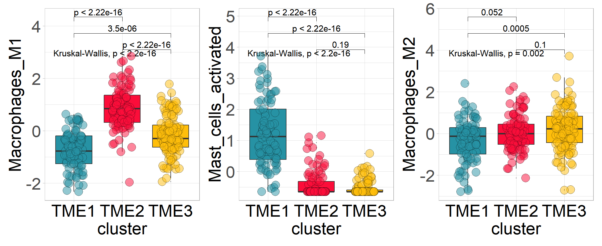
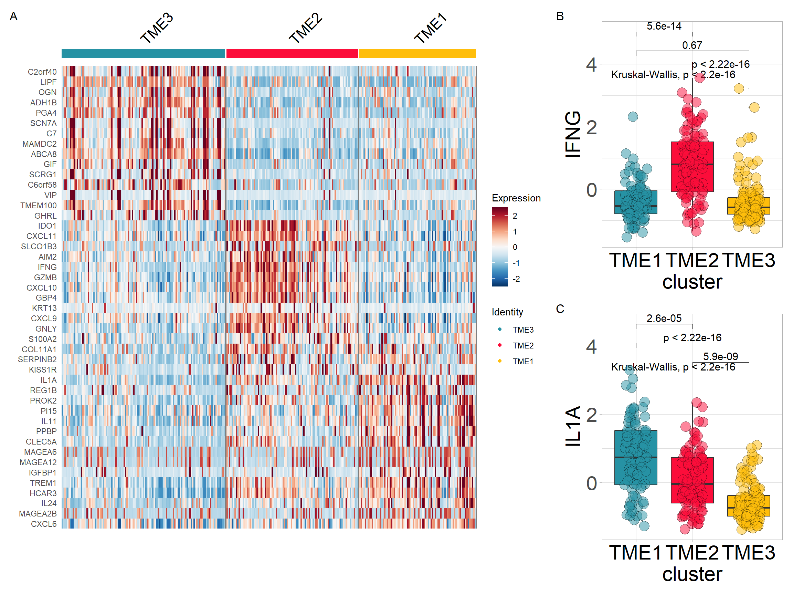
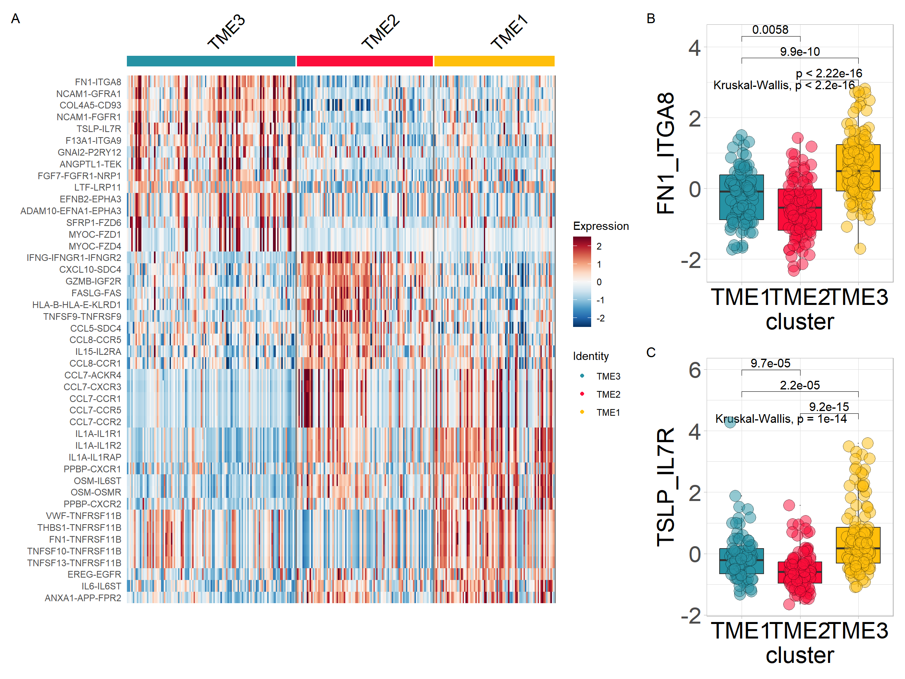

Chapter 7 TME Interaction analysis
7.2 Downloading data for example
Obtaining data set from GEO Gastric cancer: GSE62254 using GEOquery R package.
if (!requireNamespace("GEOquery", quietly = TRUE)) BiocManager::install("GEOquery")
library("GEOquery")
# NOTE: This process may take a few minutes which depends on the internet connection speed. Please wait for its completion.
eset_geo<- getGEO(GEO = "GSE62254", getGPL = F, destdir = "./")
eset <- eset_geo[[1]]
eset <- exprs(eset)
eset[1:5,1:5]## GSM1523727 GSM1523728 GSM1523729 GSM1523744 GSM1523745
## 1007_s_at 3.2176645 3.0624323 3.0279131 2.921683 2.8456013
## 1053_at 2.4050109 2.4394879 2.2442708 2.345916 2.4328582
## 117_at 1.4933412 1.8067380 1.5959665 1.839822 1.8326058
## 121_at 2.1965561 2.2812181 2.1865556 2.258599 2.1874363
## 1255_g_at 0.8698382 0.9502466 0.8125414 1.012860 0.94419937.3 Gene Annotation: HGU133PLUS-2 (Affaymetrix)
# Conduct gene annotation using `anno_hug133plus2` file; If identical gene symbols exists, these genes would be ordered by the mean expression levels. The gene symbol with highest mean expression level is selected and remove others.
eset<-anno_eset(eset = eset,
annotation = anno_hug133plus2,
symbol = "symbol",
probe = "probe_id",
method = "mean")
eset[1:5, 1:3]## GSM1523727 GSM1523728 GSM1523729
## SH3KBP1 4.327974 4.316195 4.351425
## RPL41 4.246149 4.246808 4.257940
## EEF1A1 4.293762 4.291038 4.262199
## COX2 4.250288 4.283714 4.270508
## LOC101928826 4.219303 4.219670 4.2132527.4 TME deconvolution using CIBERSORT algorithm
cell <- deconvo_tme(eset = eset, method = "cibersort", arrays = TRUE, perm = 1000, absolute.mode = TRUE)
head(cell)## # A tibble: 6 × 27
## ID B_cells_naive_CIBERS…¹ B_cells_memory_CIBER…² Plasma_cells_CIBERSORT
## <chr> <dbl> <dbl> <dbl>
## 1 GSM15237… 0.00610 0.0136 0.149
## 2 GSM15237… 0 0.0339 0.0765
## 3 GSM15237… 0.00335 0.0183 0.0939
## 4 GSM15237… 0 0.0594 0.0773
## 5 GSM15237… 0 0.00738 0.109
## 6 GSM15237… 0.0118 0.0115 0.138
## # ℹ abbreviated names: ¹B_cells_naive_CIBERSORT, ²B_cells_memory_CIBERSORT
## # ℹ 23 more variables: T_cells_CD8_CIBERSORT <dbl>,
## # T_cells_CD4_naive_CIBERSORT <dbl>,
## # T_cells_CD4_memory_resting_CIBERSORT <dbl>,
## # T_cells_CD4_memory_activated_CIBERSORT <dbl>,
## # T_cells_follicular_helper_CIBERSORT <dbl>,
## # `T_cells_regulatory_(Tregs)_CIBERSORT` <dbl>, …7.5 Identifying TME patterns
Identification of optimal clustering based on cellular infiltration patterns in the microenvironment.
tme <- tme_cluster(input = cell, features = colnames(cell)[2:23], id = "ID", scale = TRUE, method = "kmeans", max.nc = 5)## [1] ">>>== Best number of TME clusters is: "
## Number_clusters Value_Index
## 3.0000 2.7266
## [1] ">>>== Cluster of samples: "
## TME1 TME2 TME3
## 85 96 119Use of heatmaps to reflect cellular differences between TME subtypes
colnames(tme) <- gsub(colnames(tme), pattern = "_CIBERSORT", replacement = "")
res <- sig_heatmap(input = tme, features = colnames(tme)[3:ncol(tme)], group = "cluster", path = "result", palette = 6)
7.6 Cell abundance of each cluster
cols <- c('#2692a4','#fc0d3a','#ffbe0b')
p1 <- sig_box(tme, variable = "cluster", signature = "Macrophages_M1", jitter = TRUE,
cols = cols, show_pvalue = TRUE, size_of_pvalue = 4)## # A tibble: 3 × 8
## .y. group1 group2 p p.adj p.format p.signif method
## <chr> <chr> <chr> <dbl> <dbl> <chr> <chr> <chr>
## 1 signature TME3 TME2 2.25e-17 4.50e-17 < 2e-16 **** Wilcoxon
## 2 signature TME3 TME1 3.48e- 6 3.5 e- 6 3.5e-06 **** Wilcoxon
## 3 signature TME2 TME1 6.50e-24 2 e-23 < 2e-16 **** Wilcoxonp2 <- sig_box(tme, variable = "cluster", signature = "Mast_cells_activated",
jitter = TRUE, cols = cols, show_pvalue = TRUE, size_of_pvalue = 4)## # A tibble: 3 × 8
## .y. group1 group2 p p.adj p.format p.signif method
## <chr> <chr> <chr> <dbl> <dbl> <chr> <chr> <chr>
## 1 signature TME3 TME2 1.89e- 1 1.9 e- 1 0.19 ns Wilcoxon
## 2 signature TME3 TME1 6.89e-33 2.10e-32 <2e-16 **** Wilcoxon
## 3 signature TME2 TME1 1.12e-25 2.20e-25 <2e-16 **** Wilcoxonp3 <- sig_box(tme, variable = "cluster", signature = "Macrophages_M2",
jitter = TRUE, cols = cols, show_pvalue = TRUE, size_of_pvalue = 4)## # A tibble: 3 × 8
## .y. group1 group2 p p.adj p.format p.signif method
## <chr> <chr> <chr> <dbl> <dbl> <chr> <chr> <chr>
## 1 signature TME3 TME2 0.101 0.1 0.10063 ns Wilcoxon
## 2 signature TME3 TME1 0.000513 0.0015 0.00051 *** Wilcoxon
## 3 signature TME2 TME1 0.0520 0.1 0.05203 ns Wilcoxon
7.7 DEG analysis between TME subtypes
Identifing TME subtype-related differential genes using find_markers_in_bulk.
We have developed a reliable classifier for the tumour microenvironment in gastric cancer using the same analysis pipelineTMEclassifier. The classifier was constructed by identifying the most robust gastric cancer TME classification through parsing the tumour microenvironment using the tme_cluster method. Next, genes specifically expressed by each microenvironmental subtype are obtained using the find_markers_in_bulk method. Finally, a machine learning approach was used to construct the classifier model.
library(Seurat)
res <- find_markers_in_bulk(pdata = tme,
eset = eset,
group = "cluster",
nfeatures = 2000,
top_n = 50,
thresh.use = 0.15,
only.pos = TRUE,
min.pct = 0.10)##
## TME3 TME2 TME1
## 119 96 85
## # A tibble: 150 × 7
## # Groups: cluster [3]
## p_val avg_log2FC pct.1 pct.2 p_val_adj cluster gene
## <dbl> <dbl> <dbl> <dbl> <dbl> <fct> <chr>
## 1 3.05e-22 0.896 1 1 6.63e-18 TME3 TMEM100
## 2 7.92e-22 1.13 1 1 1.72e-17 TME3 ADH1B
## 3 1.61e-20 0.691 1 1 3.51e-16 TME3 HHIP
## 4 1.93e-20 0.985 1 1 4.19e-16 TME3 ABCA8
## 5 5.73e-20 0.701 1 1 1.25e-15 TME3 FCER1A
## 6 9.42e-19 0.927 1 1 2.05e-14 TME3 MAMDC2
## 7 1.61e-18 0.773 1 1 3.49e-14 TME3 C1QTNF7
## 8 1.77e-18 0.718 1 1 3.85e-14 TME3 C16orf89
## 9 3.91e-18 0.729 1 1 8.51e-14 TME3 FHL1
## 10 5.87e-18 0.684 1 1 1.28e-13 TME3 ITGA8
## # ℹ 140 more rows## [1] "TMEM100" "ADH1B" "ABCA8" "MAMDC2"
## [5] "SCN7A" "LIPF" "C7" "C2orf40"
## [9] "PGA4" "OGN" "GKN2" "GHRL"
## [13] "C6orf58" "SCRG1" "GIF" "IFNG"
## [17] "WARS" "CXCL10" "IDO1" "GZMB"
## [21] "CXCL11" "GBP4" "CXCL9" "GNLY"
## [25] "GBP5" "AIM2" "RTEL1-TNFRSF6B" "COL11A1"
## [29] "S100A2" "SLCO1B3" "IL1A" "IL1B"
## [33] "PPBP" "IL11" "CXCL6" "CCL3L3"
## [37] "TREM1" "PROK2" "IL24" "PI15"
## [41] "HCAR3" "CLEC5A" "MAGEA6" "MAGEA12"
## [45] "REG1B"Heatmap visualisation using Seurat’s DoHeatmap
#定义分型对应的颜色
cols <- c('#2692a4','#fc0d3a','#ffbe0b')
p1 <- DoHeatmap(res$sce, top15$gene, group.colors = cols )+
scale_fill_gradientn(colours = rev(colorRampPalette(RColorBrewer::brewer.pal(11,"RdBu"))(256)))Extracting variables from the expression matrix to merge with TME subtype
input <- combine_pd_eset(eset = eset, pdata = tme, feas = top15$gene, scale = T)
p2 <- sig_box(input, variable = "cluster", signature = "IFNG", jitter = TRUE,
cols = cols, show_pvalue = TRUE, size_of_pvalue = 4)## # A tibble: 3 × 8
## .y. group1 group2 p p.adj p.format p.signif method
## <chr> <chr> <chr> <dbl> <dbl> <chr> <chr> <chr>
## 1 signature TME3 TME2 1.11e-16 3.30e-16 < 2e-16 **** Wilcoxon
## 2 signature TME3 TME1 6.70e- 1 6.7 e- 1 0.67 ns Wilcoxon
## 3 signature TME2 TME1 5.60e-14 1.10e-13 5.6e-14 **** Wilcoxonp3 <- sig_box(input, variable = "cluster", signature = "IL1A",
jitter = TRUE, cols = cols, show_pvalue = TRUE, size_of_pvalue = 4)## # A tibble: 3 × 8
## .y. group1 group2 p p.adj p.format p.signif method
## <chr> <chr> <chr> <dbl> <dbl> <chr> <chr> <chr>
## 1 signature TME3 TME2 5.94e- 9 1.20e- 8 5.9e-09 **** Wilcoxon
## 2 signature TME3 TME1 7.96e-18 2.40e-17 < 2e-16 **** Wilcoxon
## 3 signature TME2 TME1 2.60e- 5 2.6 e- 5 2.6e-05 **** WilcoxonCombining the results obtained above
# if (!requireNamespace("patchwork", quietly = TRUE)) install.packages("patchwork")
library(patchwork)
p <- (p1|p2/p3) + plot_layout(widths = c(2.3,1))
p + plot_annotation(tag_levels = 'A')
7.8 Identifying signatures associated with TME clusters
Calculate TME associated signatures-(through PCA method).
sig_tme<-calculate_sig_score(pdata = NULL,
eset = eset,
signature = signature_collection,
method = "pca",
mini_gene_count = 2)
sig_tme <- t(column_to_rownames(sig_tme, var = "ID"))
sig_tme[1:5, 1:3]## GSM1523727 GSM1523728 GSM1523729
## CD_8_T_effector -2.5513794 0.7789141 -2.1770675
## DDR -0.8747614 0.7425162 -1.3272054
## APM 1.1098368 2.1988688 -0.9516419
## Immune_Checkpoint -2.3701787 0.9455120 -1.4844104
## CellCycle_Reg 0.1063358 0.7583302 -0.3649795Finding characteristic variables associated with TME clusters
res <- find_markers_in_bulk(pdata = tme, eset = sig_tme, group = "cluster", nfeatures = 1000, top_n = 20, min.pct = 0.10)##
## TME3 TME2 TME1
## 119 96 85
## # A tibble: 59 × 7
## # Groups: cluster [3]
## p_val avg_log2FC pct.1 pct.2 p_val_adj cluster gene
## <dbl> <dbl> <dbl> <dbl> <dbl> <fct> <chr>
## 1 1.05e-25 5.03 0.832 0.287 2.70e-23 TME3 Glycolysis
## 2 1.15e-23 3.76 0.79 0.238 2.93e-21 TME3 Tyrosine-Metabolism
## 3 8.38e-18 4.07 0.756 0.32 2.15e-15 TME3 Drug-Metabolism-by-Cytochr…
## 4 8.59e-14 4.10 0.689 0.359 2.20e-11 TME3 Retinol-Metabolism
## 5 2.59e-13 3.55 0.723 0.348 6.64e-11 TME3 Metabolism-of-Xenobiotics-…
## 6 5.99e-11 10.0 0.546 0.227 1.53e- 8 TME3 detox.iCAF
## 7 7.25e-11 10.6 0.571 0.26 1.86e- 8 TME3 Normal.Fibroblast
## 8 2.32e-10 3.71 0.664 0.343 5.94e- 8 TME3 Ether-Lipid-Metabolism
## 9 1.99e- 9 5.12 0.555 0.276 5.10e- 7 TME3 TMEscoreB-CIR
## 10 2.23e- 8 3.43 0.664 0.387 5.71e- 6 TME3 Drug-Metabolism-by-other-e…
## # ℹ 49 more rowstop15 <- res$top_markers %>% dplyr:: group_by(cluster) %>% dplyr::top_n(15, avg_log2FC)
p1 <- DoHeatmap(res$sce, top15$gene, group.colors = cols)+
scale_fill_gradientn(colours = rev(colorRampPalette(RColorBrewer::brewer.pal(11,"RdBu"))(256)))可视化结果：选择特征变量
top15$gene <- gsub(top15$gene, pattern = "-", replacement = "\\_")
input <- combine_pd_eset(eset = sig_tme, pdata = tme, feas = top15$gene, scale = T)
p2 <- sig_box(input, variable = "cluster", signature = "CD_8_T_effector", jitter = TRUE,
cols = cols, show_pvalue = TRUE, size_of_pvalue = 4, size_of_font = 6)## # A tibble: 3 × 8
## .y. group1 group2 p p.adj p.format p.signif method
## <chr> <chr> <chr> <dbl> <dbl> <chr> <chr> <chr>
## 1 signature TME3 TME2 3.18e-12 6.40e-12 3.2e-12 **** Wilcoxon
## 2 signature TME3 TME1 1.01e- 1 1 e- 1 0.1 ns Wilcoxon
## 3 signature TME2 TME1 4.53e-13 1.4 e-12 4.5e-13 **** Wilcoxonp3 <- sig_box(input, variable = "cluster", signature = "Neutrophils_Bindea_et_al",
jitter = TRUE, cols = cols, show_pvalue = TRUE, size_of_pvalue = 4, size_of_font = 6)## # A tibble: 3 × 8
## .y. group1 group2 p p.adj p.format p.signif method
## <chr> <chr> <chr> <dbl> <dbl> <chr> <chr> <chr>
## 1 signature TME3 TME2 0.0000416 0.000097 4.2e-05 **** Wilcoxon
## 2 signature TME3 TME1 0.0000323 0.000097 3.2e-05 **** Wilcoxon
## 3 signature TME2 TME1 0.149 0.15 0.15 ns Wilcoxon
Survival differences between tumour microenvironment subtypes
library(survminer)
data(pdata_acrg, package = "IOBR")
input <- merge(pdata_acrg, input, by = "ID")
p1<-surv_group(input_pdata = input,
target_group = "cluster",
ID = "ID",
reference_group = "High",
project = "ACRG",
cols = cols,
time = "OS_time",
status = "OS_status",
time_type = "month",
save_path = "result")## >>> Dataset's survival follow up time is range between 1 to 105.7 months## TME1 TME2 TME3
## 85 96 119## 8596119## Maximum of follow up time is 105.7 months; and will be divided into 6 sections;
Relationship between tumour microenvironmental subtypes and other subtypes
## # A tibble: 12 × 5
## # Groups: cluster [3]
## cluster Subtype Freq Prop count
## <chr> <fct> <dbl> <dbl> <dbl>
## 1 TME1 EMT 14 0.16 85
## 2 TME1 MSI 12 0.14 85
## 3 TME1 MSS/TP53- 34 0.4 85
## 4 TME1 MSS/TP53+ 25 0.29 85
## 5 TME2 EMT 6 0.06 96
## 6 TME2 MSI 47 0.49 96
## 7 TME2 MSS/TP53- 22 0.23 96
## 8 TME2 MSS/TP53+ 21 0.22 96
## 9 TME3 EMT 26 0.22 119
## 10 TME3 MSI 9 0.08 119
## 11 TME3 MSS/TP53- 51 0.43 119
## 12 TME3 MSS/TP53+ 33 0.28 119
## [1] "'#374E55FF', '#DF8F44FF', '#00A1D5FF', '#B24745FF', '#79AF97FF', '#6A6599FF', '#80796BFF'"## # A tibble: 9 × 5
## # Groups: cluster [3]
## cluster Lauren Freq Prop count
## <chr> <fct> <dbl> <dbl> <dbl>
## 1 TME1 Diffuse 37 0.44 85
## 2 TME1 Intestinal 47 0.55 85
## 3 TME1 Mixed 1 0.01 85
## 4 TME2 Diffuse 31 0.32 96
## 5 TME2 Intestinal 54 0.56 96
## 6 TME2 Mixed 11 0.11 96
## 7 TME3 Diffuse 67 0.56 119
## 8 TME3 Intestinal 45 0.38 119
## 9 TME3 Mixed 7 0.06 119
## [1] "'#374E55FF', '#DF8F44FF', '#00A1D5FF', '#B24745FF', '#79AF97FF', '#6A6599FF', '#80796BFF'"p3<- percent_bar_plot(input, x = "cluster" , y = "TMEscore_binary", palette = "jama", axis_angle = 60)## # A tibble: 7 × 5
## # Groups: cluster [3]
## cluster TMEscore_binary Freq Prop count
## <chr> <fct> <dbl> <dbl> <dbl>
## 1 TME1 High 5 0.06 85
## 2 TME1 Low 79 0.93 85
## 3 TME1 <NA> 1 0.01 85
## 4 TME2 High 59 0.61 96
## 5 TME2 Low 37 0.39 96
## 6 TME3 High 7 0.06 119
## 7 TME3 Low 112 0.94 119
## [1] "'#374E55FF', '#DF8F44FF', '#00A1D5FF', '#B24745FF', '#79AF97FF', '#6A6599FF', '#80796BFF'"
7.9 References
Cristescu, R., Lee, J., Nebozhyn, M. et al. Molecular analysis of gastric cancer identifies subtypes associated with distinct clinical outcomes. Nat Med 21, 449–456 (2015). https://doi.org/10.1038/nm.3850
CIBERSORT; Newman, A. M., Liu, C. L., Green, M. R., Gentles, A. J., Feng, W., Xu, Y., … Alizadeh, A. A. (2015). Robust enumeration of cell subsets from tissue expression profiles. Nature Methods, 12(5), 453–457. https://doi.org/10.1038/nmeth.3337;
Seurat: Hao and Hao et al. Integrated analysis of multimodal single-cell data. Cell (2021)